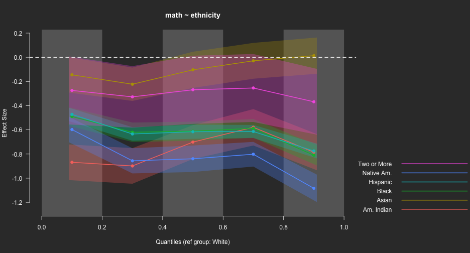

Agenda
- Introductions
- Syllabus
- Introduce R
- Very basics of R (object assignment)
- R packages
- Guided practice (if time allows)
Overall purpose of today: Get you excited about R! Will be a lot of me showing, and not a lot of you doing. That will change quickly.
Who are you?
- Please introduce yourself.
- Name/Program of study and things you’re interested in
- Prior experience with R
- Why do you want to learn R?
Who am I?
Daniel Anderson
- Research Associate: Behavioral Research and Teaching
- Dad (two daughters: 5 and 3)
- Quantitative educational researcher who loves R
- Primary areas of interest
- R and computational educational research
- Open data, open science, and reproducible workflows
- Growth modeling (primarily through multilevel models)

Before we get started…
A few announcements
- Datacamp!
- Cool stuff share Monday

Example of a cool stuff share: 1
(One that I did, one that I saw)

The colorblindr package
Simulate what a plot would look like according to 4 different types of color blindness.


Syllabus
Student Learning Outcomes
- Be able to produce dynamic and reproducible documents with R Markdown in both pdf and html format.
- Understand the principles of tidy data, and when it is and is not useful to have your data in a tidy format.
- Understand the tools for manipulating data into a tidy format and be able to apply these tools to reshape relatively complex datasets into a tidy format.
- Understand and be able to apply the grammar of graphics, as implemented through the ggplot2 package, to tidy data for both exploratory and model-based plotting (exploratory plotting emphasized).
What this class is and is not
The purpose of this class is to provide you with a foundational set of skills for manipulating and exploring data visually while ensuring your work is transparent and reproducible. Basically, an intro to data science with R.
This class has three foci
- Data structuring and manipulations
- Data visualization
- Reproducible workflows
This class is not
- All encompassing (there’s a TON we will not get to)
- A statistics course (we’ll use stats in examples, though)
- A programming course (that would be a follow-up second course)
Required Textbook (free)
This Course

Next Course (if there is one)

These books are both available for free!
- R for Data Science: http://r4ds.had.co.nz
- Advanced R: http://adv-r.had.co.nz
Other books
Freely available at http://socviz.co

Other readings (also all free)
- Grolemund – Tidy data: http://garrettgman.github.io/tidying/
- R-Markdown
- Lesson 1: http://rmarkdown.rstudio.com/lesson-1.html
- Lesson 2: http://rmarkdown.rstudio.com/lesson-2.html
- Lesson 3: http://rmarkdown.rstudio.com/lesson-3.html
- Lesson 4: http://rmarkdown.rstudio.com/lesson-4.html
- Sanchez, G. (2013). Handling and Processing Strings in R. Freely available online at http://gastonsanchez.com/Handling_and_Processing_Strings_in_R.pdf
- Wickham, H. (2014). Tidy Data. Journal of Statistical Software. 59(10), 1-23.
Another book
Another book I highly recommend is Modern Data Science with R by Ben Baumer, Daniel Kaplan, and Nicholas Horton. * A bit more advanced than our class, but the intro chapters are foundational (i.e., in line with our class). * I’ll be using datasets and some examples from this book. * Only downside is it’s pretty spendy (~$100)

There are a few other books out there that I’ll be providing you chapters from. Overall, there’s a ton of resources out there and part of the challenge at times can be separating the junk from the good stuff. I’ll help you wade those waters.
Before next class
Style guide! Have good grammar when you code.
http://adv-r.had.co.nz/Style.html
Some quick advice: * Keep everything lower case, unless there’s a clear resason not to * Use style that helps you spot errors in your code more quickly * Whatever you do, be consistent
Weekly homeworks
- Why? Sounds torturous
- I’m a firm believer that the only way you can truly learn R is to practice, practice, practice. So - lots built in.
- All homeworks must be reproducible, which we’ll talk a lot about.
- Homework assignments should be challenging but should not take over your weekend (and certainly not week). First, work hard, but get help if you get stuck (from your classmates and me).
- Homeworks can be completed collaboratively (and I encourage it).
- Scored on a completion basis only (not accuracy, this is mostly about making sure you’re putting in the time/effort).
- Assigned each Thursday and due before the start of class the following Thursday.
Please come to me if you need help!
Weekly homeworks (10 points each)
- Creating an R Markdown Document
- Importing and Manipulating data
- Data visualization
- Tidy data
- Full example 1 (more advanced dplyr and RMarkdown)
- Full example 2 (review)
- Joins
- Full example 3 (strings)
These mostly follow the lecture topics.
Final Project
If you need data for your final project contact me now! Final project can be completed independently or in groups of up to 3 people. End result should be a mini manuscript (intro, methods, results, discussion).
Project outline due by the start of the first class, Week 5.
Final project must
- Be reproducible
- Move data from its raw “messy” format to a tidy data format
- Include at least two exploratory plots
- Include at least summary statistics of the data in tables, although fitted models are a plus.
- Does not have to be APA format - kudos to you if you do. If you’re hoping to move forward with a reproducible work flow outside of this class, I’d recommend trying the papaja package.
For future reference
Final project must use the following functions:
* gather, separate, select, filter, spread, *_join, group_by, and summarize
Final project outline
Due Week 4 and should include * Description of the data to be used * Discussion of preparatory work that needs to be done, and how it will meet the final requirements (i.e., use the functions on the previous slide) * Anything else you can think of that you want feedback from me on Primary purpose is for me to assess the feasibility of your project and help provide you with guidance.
Final project presentation
Order randomly assigned and should cover the following (i.e., slides dedicated to each) * Share your journey (everyone, at least for a minute or two) * Discuss challenges you had along the way * Celebrate your successes * Discuss challenges you are still facing * Discuss substantive findings * Show off your cool data figures! * Disucss next R hurdle you want to tackle
Labs
- Every Thursday throughout the term
- Time allotment will vary (~45 minutes to the entire class session)
- Generally, labs will include some guided practice and a “challenge”
- Immensely important to learning, and therefore contribute to your grade (5 points each). Contact me beforehand if you’re going to miss a lab.
- The final two weeks will be for final project presentations and attendance counts towards your lab grade for that week.
Grading
- Homework: 8 @ 10 points each = 80 points (28%)
- Final Project: 120 points (42%)
- Final Project Outline: 10 points (4%)
- Final Project Presentation: 25 points (9%)
- Labs: 10 @ 5 points each = 50 points (18%)
Total Possible: 285 points
Grading
| Lower point range | Grade | Upper point range |
|---|---|---|
| ≥ 97% (276 pts) | A+ | |
| ≥ 93% (265 pts) | A | (276 pts) < 97% |
| ≥ 90% (256 pts) | A- | (265 pts) < 93% |
| ≥ 87% (248 pts) | B+ | (256 pts) < 90% |
| ≥ 83% (237 pts) | B | (248 pts) < 87% |
| ≥ 80% (228 pts) | B- | (237 pts) < 83% |
| ≥ 77% (219 pts) | C+ | (228 pts) < 80% |
| ≥ 73% (208 pts) | C | (219 pts) < 77% |
| < 70% (200 pts) | C- | (208 pts) < 73% |
| F | (200 pts) < 70% |
Orientation of this course
This course is oriented around the tidyverse.
- Very conscious decision that I really believe is the correct one.
The tidyverse is an alternative to base R functions
What is R?
A programming language
Tremendously powerful and flexible statistical software that happens to be free
No point-and-click interface
Incredible array of external “packages” available for specialized analyses, data visualizations, or to automate much of the data “munging” process
Code-based interface


Moving to code/programming
Advantages
- Flexibility
- Only limited by your own creativity (and current level of programming skills, which are ever-evolving)
- Transparency
- Documented record of every step taken in your data preparation and analysis
- Efficiency
- Many (most?) tasks can be automated and/or applied to multiple datasets/variables simultaneously or essentially simultaneously
Disadvantages
- Steep learning curve
- Absolutely requires a significant time investment, both to learn initially and build fluency
- Equivalent to learning a new language
- You will lose patience with point-and-click interfaces
- Likely to become “one of the converted”
The R Learning Curve

How to learn R?
- Three most important ingredients: time, time, and more time
- A sprinkling of dedication and determination help.
- Be patient and forgiving with yourself. It will feel slow at first. Most people have not trained themselves to think in this way.

My goal for this course

My goals for a second course

R as a big calculator
3 + 2
## [1] 5
(1/-(3/2)^2) / 2^-1/9
## [1] -0.09876543
Object Assignment
a <- 3
b <- 2
a + b
## [1] 5
a / (a + b)
## [1] 0.6
Object re-assignment
a <- 3
a
## [1] 3
a <- 7
a
## [1] 7
Object Assignment (continued)
Objects can be of a variety of types.
string <- "Hello world!"
logical <- TRUE
double <- 3.2587021
Integer <- 6L
In this case, we can’t exactly do arithmetic with all of these. For example
string + double
## Error in string + double: non-numeric argument to binary operator
But, these objects can be extremely useful in programming.
Functions and getting help
R functions
- Anything that carries out an operation in R is a function, even
+. - Functions (outside of primitive functions) are preceded by
()- e.g.,
sum(),lm()
- e.g.,
Getting help
?can be helpful, but often too advanced early on- Helpful for understanding the formal arguments of a function
- Scroll down to the examples first
- Google is your best friend
- Other good websites
R packages
R ships with considerable functionality. It also comes with a set of pre-loaded packages
- e.g.
- “base”
- “graphics”
- “stats”
R also comes with a set of packages installed, but not loaded on launch
- e.g.
- “boot”
- “MASS”
- “Matrix”
Pre-loaded packages operate “out of the box”. For example, plot is part of the graphics package, which ships with R.
plot(x = 1:10, y = 1:10)

R packages (continued)
Packages that come installed, but not pre-loaded, require an explicit call to the library first. For example, to simulate data from a multivariate normal distribution we could use MASS::mvrnorm.
# Set up simulation parameters
n_obs <- 1000
means <- c(100, 50)
error_cv <- matrix(c(100, 44,
44, 49), byrow = TRUE, ncol = 2) # part of base
cov2cor(error_cv) # part of stats package
## [,1] [,2]
## [1,] 1.0000000 0.6285714
## [2,] 0.6285714 1.0000000
Simulation, continued
library(MASS) # pre-installed package
sim <- mvrnorm(n = n_obs, mu = means, Sigma = error_cv)
head(sim)
## [,1] [,2]
## [1,] 120.83111 57.57135
## [2,] 102.68509 51.72533
## [3,] 98.84173 45.72817
## [4,] 88.48961 55.49168
## [5,] 86.90686 44.02828
## [6,] 114.51243 64.21404
plot(sim)

cor(sim)
## [,1] [,2]
## [1,] 1.0000000 0.6305852
## [2,] 0.6305852 1.0000000
Overall takeaway
There is a ton of functionality that comes with R right from your initial download. But, the functionality can be extended further by installing other packages.
Other packages
On CRAN

- Any of these can be installed with
install.packages("pkg_name"). You will then have access to all the functionality of the package. - Notice this plot only goes to mid-2014. As of this writing (09/20/17), there are 11,460 packages available on CRAN! See https://cran.r-project.org/web/packages/
Other packages
On github


Installing from github
First, install the devtools package from CRAN
install.packages("devtools")
Next, load the devtools library to access the install_github function. For example, to install my esvis package
library(devtools)
install_github("DJAnderson07/esvis")
You then have access to all the functionality of that package once you load it. Let’s look at these data:
| sid | cohort | sped | ethnicity | frl | ell | season | reading | math |
|---|---|---|---|---|---|---|---|---|
| 332347 | 1 | Non-Sped | Hispanic | FRL | Active | Spring | 167 | 192 |
| 400047 | 1 | Non-Sped | Native Am. | FRL | Non-ELL | Spring | 191 | 191 |
| 400047 | 1 | Non-Sped | Native Am. | FRL | Non-ELL | Fall | 183 | 182 |
| 400047 | 1 | Non-Sped | Native Am. | FRL | Non-ELL | Winter | 178 | 179 |
| 400277 | 1 | Non-Sped | Native Am. | FRL | Non-ELL | Winter | 199 | 197 |
| 400277 | 1 | Non-Sped | Native Am. | FRL | Non-ELL | Fall | 203 | 196 |
PP-Plot
library(esvis)
pp_plot(reading ~ ell, d)

Binned quantile effect sizes
binned_plot(math ~ ethnicity, d, qtiles = seq(0, 1, .2), theme = "dark")

ES Calculation
hedg_g(math ~ ethnicity, d, ref_group = "White")
## ref_group foc_group estimate
## 1 White Asian 0.1068644
## 2 White Two or More 0.3166034
## 3 White Hispanic 0.6335197
## 4 White Black 0.6293799
## 5 White Am. Indian 0.7641845
## 6 White Native Am. 0.8213924
auc(math ~ ethnicity, d)
## ref_group foc_group estimate
## 1 White Asian 0.5350915
## 2 White Two or More 0.5821795
## 3 White Hispanic 0.6741454
## 4 White Black 0.6748681
## 5 White Am. Indian 0.6955814
## 6 White Native Am. 0.7305532
## 7 Asian Two or More 0.5429502
## 8 Asian Hispanic 0.6293645
## 9 Asian Black 0.6303332
## 10 Asian Am. Indian 0.6587369
## 11 Asian Native Am. 0.6850446
## 12 Two or More Hispanic 0.5868800
## 13 Two or More Black 0.5877532
## 14 Two or More Am. Indian 0.6188882
## 15 Two or More Native Am. 0.6443515
## 16 Hispanic Black 0.5003839
## 17 Hispanic Am. Indian 0.5413717
## 18 Hispanic Native Am. 0.5624617
## 19 Black Am. Indian 0.5399354
## 20 Black Native Am. 0.5627013
## 21 Am. Indian Native Am. 0.5146317
## 22 Native Am. Am. Indian 0.4853930
## 23 Native Am. Black 0.4373502
## 24 Native Am. Hispanic 0.4375635
## 25 Native Am. Two or More 0.3530251
## 26 Native Am. Asian 0.3145289
## 27 Native Am. White 0.2693353
## 28 Am. Indian Black 0.4602532
## 29 Am. Indian Hispanic 0.4586797
## 30 Am. Indian Two or More 0.3779392
## 31 Am. Indian Asian 0.3412546
## 32 Am. Indian White 0.3047446
## 33 Black Hispanic 0.4996383
## 34 Black Two or More 0.4097477
## 35 Black Asian 0.3694309
## 36 Black White 0.3251490
## 37 Hispanic Two or More 0.4110376
## 38 Hispanic Asian 0.3703988
## 39 Hispanic White 0.3258460
## 40 Two or More Asian 0.4540153
## 41 Two or More White 0.4156048
## 42 Asian White 0.4646856
Is this exciting!?! YES!!!
Why is this such a big deal? * With just a basic knowledge of R you have access to literally thousands of packages + Expanding on a daily basis + Provides access to cutting edge and specialized functionality for analysis, data visualization, and data munging + Some of the most modern thinking on data analysis topics are often represented in these packages
A few examples of amazing packages
First: the data
https://cepa.stanford.edu/seda/overview
(data loaded from code not displayed)
head(seda)
## year grade leaid leaname fips stateabb
## 1 2009 3 5301350 CLE ELUM-ROSLYN SCHOOL DISTRICT 53 WA
## 2 2009 3 4032370 WESTERN HEIGHTS 40 OK
## 3 2009 3 4031950 WAUKOMIS 40 OK
## 4 2009 3 1300290 BARROW COUNTY 13 GA
## 5 2009 3 1304540 SOCIAL CIRCLE CITY 13 GA
## 6 2009 3 1907920 COLO-NESCO COMM SCHOOL DISTRICT 19 IA
## mean_link_ela se_link_ela mean_link_math se_link_math time time2
## 1 205.4105 5.527168 221.0476 4.088524 0 0
## 2 176.4205 3.254465 210.9097 1.958732 0 0
## 3 192.3103 9.503721 217.2896 5.370912 0 0
## 4 201.5906 1.672783 220.0416 1.206892 0 0
## 5 203.6270 3.515068 224.9344 2.304581 0 0
## 6 218.0754 6.857743 236.9710 4.348451 0 0
lme4
Let’s fit a multilevel linear growth model for ELA
Question: How much does the progression from Grades 3-7 vary by state?
# install.packages("lme4")
library(lme4)
## Loading required package: Matrix
mlm <- lmer(mean_link_ela ~ 1 + time +
(1 + time|leaname) +
(1 + time|stateabb),
data = seda)
summary(mlm)
## Linear mixed model fit by REML ['lmerMod']
## Formula: mean_link_ela ~ 1 + time + (1 + time | leaname) + (1 + time |
## stateabb)
## Data: seda
##
## REML criterion at convergence: 382536.8
##
## Scaled residuals:
## Min 1Q Median 3Q Max
## -10.9751 -0.4706 -0.0004 0.4656 7.2354
##
## Random effects:
## Groups Name Variance Std.Dev. Corr
## leaname (Intercept) 172.846 13.1471
## time 2.156 1.4683 -0.29
## stateabb (Intercept) 78.571 8.8640
## time 0.673 0.8204 -0.44
## Residual 31.900 5.6480
## Number of obs: 54155, groups: leaname, 11153; stateabb, 51
##
## Fixed effects:
## Estimate Std. Error t value
## (Intercept) 205.2514 1.2729 161.24
## time 11.5894 0.1217 95.23
##
## Correlation of Fixed Effects:
## (Intr)
## time -0.431
Prettier output? Use a different package!
# install.packages("sjPlot")
library(sjPlot)
sjt.lmer(mlm, p.kr = FALSE) # Note, second argument generally not necessary
| mean_link_ela | ||||
| B | CI | p | ||
| Fixed Parts | ||||
| (Intercept) | 205.25 | 202.76 – 207.75 | <.001 | |
| time | 11.59 | 11.35 – 11.83 | <.001 | |
| Random Parts | ||||
| σ2 | 31.900 | |||
| τ00, leaname | 172.846 | |||
| τ00, stateabb | 78.571 | |||
| ρ01 | -0.290 | |||
| Nleaname | 11153 | |||
| Nstateabb | 51 | |||
| ICCleaname | 0.610 | |||
| ICCstateabb | 0.277 | |||
| Observations | 54155 | |||
| R2 / Ω02 | .954 / .954 | |||
| mean_link_ela | ||||
| B | CI | p | ||
| Fixed Parts | ||||
| (Intercept) | 205.25 | 202.76 – 207.75 | <.001 | |
| time | 11.59 | 11.35 – 11.83 | <.001 | |
| Random Parts | ||||
| σ2 | 31.900 | |||
| τ00, leaname | 172.846 | |||
| τ00, stateabb | 78.571 | |||
| ρ01 | -0.437 | |||
| Nleaname | 11153 | |||
| Nstateabb | 51 | |||
| ICCleaname | 0.610 | |||
| ICCstateabb | 0.277 | |||
| Observations | 54155 | |||
| R2 / Ω02 | .954 / .954 | |||
Plot differences between states
library(lattice) # pre-installed package
re <- ranef(mlm, condVar = TRUE)
qqmath(re)


Compare to a curvilinear model
mlm_c <- lmer(mean_link_ela ~ 1 + time + time2 +
(1 + time|leaname) +
(1 + time|stateabb),
data = seda)
For more abbreviated (and essential) output
library(arm)
display(mlm_c, detail = TRUE)
## lmer(formula = mean_link_ela ~ 1 + time + time2 + (1 + time |
## leaname) + (1 + time | stateabb), data = seda)
## coef.est coef.se t value
## (Intercept) 205.93 1.27 161.67
## time 10.24 0.14 75.49
## time2 0.34 0.01 23.19
##
## Error terms:
## Groups Name Std.Dev. Corr
## leaname (Intercept) 13.17
## time 1.49 -0.30
## stateabb (Intercept) 8.87
## time 0.83 -0.44
## Residual 5.60
## ---
## number of obs: 54155, groups: leaname, 11153; stateabb, 51
## AIC = 382030, DIC = 381996.5
## deviance = 382003.4
Compare models
anova(mlm, mlm_c)
## refitting model(s) with ML (instead of REML)
## Data: seda
## Models:
## mlm: mean_link_ela ~ 1 + time + (1 + time | leaname) + (1 + time |
## mlm: stateabb)
## mlm_c: mean_link_ela ~ 1 + time + time2 + (1 + time | leaname) + (1 +
## mlm_c: time | stateabb)
## Df AIC BIC logLik deviance Chisq Chi Df Pr(>Chisq)
## mlm 9 382555 382635 -191268 382537
## mlm_c 10 382023 382112 -191002 382003 533.11 1 < 2.2e-16 ***
## ---
## Signif. codes: 0 '***' 0.001 '**' 0.01 '*' 0.05 '.' 0.1 ' ' 1
A few other examples
The ggplot2 package
(we’ll talk about this package a lot all term long)
head(s2)
## year grade leaid leaname fips stateabb
## AR.668 2009 3 507770 HIGHLAND SCHOOL DISTRICT 5 AR
## AR.773 2009 3 5900112 LUKACHUKAI COMMUNITY SCHOOL 59 AR
## AR.3267 2009 3 508610 LAKE HAMILTON SCHOOL DISTRICT 5 AR
## AR.3743 2009 3 500043 MOUNTAIN HOME SCHOOL DISTRICT 5 AR
## AR.4128 2009 3 508010 HUGHES SCHOOL DISTRICT 5 AR
## AR.5689 2009 3 504800 CROSSETT SCHOOL DISTRICT 5 AR
## time time2 Subject mean se
## AR.668 0 0 ela 208.8605 3.097313
## AR.773 0 0 ela 114.1453 7.952303
## AR.3267 0 0 ela 213.4426 2.723927
## AR.3743 0 0 ela 212.5173 2.666646
## AR.4128 0 0 ela 197.0950 7.475408
## AR.5689 0 0 ela 192.4590 3.492340
ggplot Ex 1
ggplot(data = s2, aes(x = grade, y = mean, group = leaid)) +
geom_smooth() +
facet_wrap(~stateabb)

ggplot Ex 2
ggplot(data = s2, aes(x = grade, y = mean, group = leaid)) +
geom_smooth(se = FALSE) +
facet_wrap(~stateabb)

Quickly…
A few other new exciting advancements
shiny
library(shinystan)
launch_shinystan_demo()
plotly
Book https://plotly-book.cpsievert.me/linking-views-with-shiny.html
The gganimate extension to ggplot2
## Warning: Deprecated: please use `purrr::possibly()` instead
## Warning: Deprecated: please use `purrr::possibly()` instead
## Warning: Deprecated: please use `purrr::possibly()` instead
## Warning: Deprecated: please use `purrr::possibly()` instead
## Warning: Deprecated: please use `purrr::possibly()` instead
## Error in mutate_impl(.data, dots): Evaluation error: object 'E' not found.
## Warning: Deprecated: please use `purrr::possibly()` instead
## Warning: Deprecated: please use `purrr::possibly()` instead
## Warning: Deprecated: please use `purrr::possibly()` instead
## Warning: Deprecated: please use `purrr::possibly()` instead
## Warning: Deprecated: please use `purrr::possibly()` instead
## Warning: Deprecated: please use `purrr::possibly()` instead
## Warning: Deprecated: please use `purrr::possibly()` instead
## Warning: Deprecated: please use `purrr::possibly()` instead
## Warning: Deprecated: please use `purrr::possibly()` instead
## Warning: Deprecated: please use `purrr::possibly()` instead
## Warning: Deprecated: please use `purrr::possibly()` instead
## Warning: Deprecated: please use `purrr::possibly()` instead
## Warning: Deprecated: please use `purrr::possibly()` instead
## Warning: Deprecated: please use `purrr::possibly()` instead
## Warning: Deprecated: please use `purrr::possibly()` instead
## Warning: Deprecated: please use `purrr::possibly()` instead
## Warning: Deprecated: please use `purrr::possibly()` instead
## Warning: Deprecated: please use `purrr::possibly()` instead
## Warning: Deprecated: please use `purrr::possibly()` instead
## Warning: Deprecated: please use `purrr::possibly()` instead
## Warning: Deprecated: please use `purrr::possibly()` instead
## Warning: Deprecated: please use `purrr::possibly()` instead
## Warning: Deprecated: please use `purrr::possibly()` instead
## Warning: Deprecated: please use `purrr::possibly()` instead
## Warning: Deprecated: please use `purrr::possibly()` instead
## Warning: Deprecated: please use `purrr::possibly()` instead
## Warning: Deprecated: please use `purrr::possibly()` instead
## Warning: Deprecated: please use `purrr::possibly()` instead
## Warning: Deprecated: please use `purrr::possibly()` instead
## Warning: Deprecated: please use `purrr::possibly()` instead
## Warning: Deprecated: please use `purrr::possibly()` instead
## Warning: Deprecated: please use `purrr::possibly()` instead
## Warning: Deprecated: please use `purrr::possibly()` instead
## Warning: Deprecated: please use `purrr::possibly()` instead
## Warning: Deprecated: please use `purrr::possibly()` instead
## Warning: Deprecated: please use `purrr::possibly()` instead
## Warning: Deprecated: please use `purrr::possibly()` instead
## Warning: Deprecated: please use `purrr::possibly()` instead
## Warning: Deprecated: please use `purrr::possibly()` instead
## Warning: Deprecated: please use `purrr::possibly()` instead
## Warning: Deprecated: please use `purrr::possibly()` instead
## Warning: Deprecated: please use `purrr::possibly()` instead
## Warning: Deprecated: please use `purrr::possibly()` instead
## Warning: Deprecated: please use `purrr::possibly()` instead
## Warning: Deprecated: please use `purrr::possibly()` instead
## Warning: Deprecated: please use `purrr::possibly()` instead
## Warning: Deprecated: please use `purrr::possibly()` instead
## Warning: Deprecated: please use `purrr::possibly()` instead
## Warning: Deprecated: please use `purrr::possibly()` instead
## Warning: Deprecated: please use `purrr::possibly()` instead
## Error in gg_animate(p): could not find function "gg_animate"
Credit: David Robinson (http://varianceexplained.org/files/loess.html)
What does LOESS (and LOWESS) stand for again?
- Locally weighted scatterplot smoothing
- non-parametric
- Similar in for to k-nearest neighbor models
Let’s visualize it!
Animating LOESS fits with different spans
## Error in mutate_impl(.data, dots): Evaluation error: object 'E' not found.
## Error in ggplot(dat, aes(E, NOx)): object 'dat' not found
## Error in gg_animate(p): could not find function "gg_animate"
Credit: David Robinson (http://varianceexplained.org/files/loess.html)
Slightly smoother version of basically the same thing - the tweener package.
Other advancements
- ggplot extensions: http://www.ggplot2-exts.org/gallery/
- html widgets: http://www.htmlwidgets.org/
Dynamic documents
We’ll talk a lot about this, starting next week!
Next time
- Getting started with R
- Reproducible Research
- LAB: Producing a dynamic document
Homework 1 will be assigned